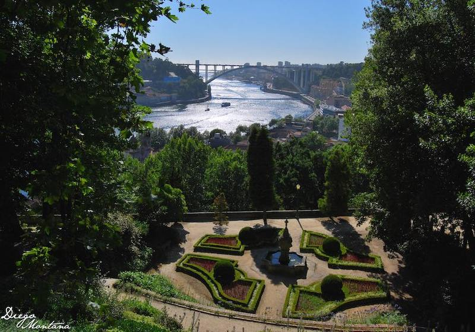
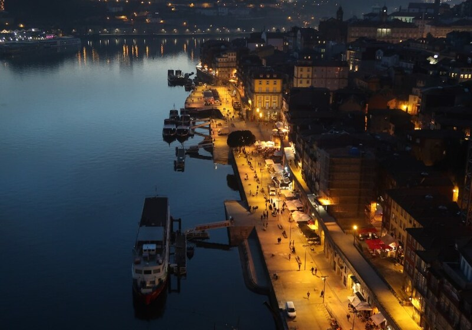

Multimédia
“A Bucólica Margem”
Egipto Gonçalves
Sento-me então a olhar o rio,os pensamentos formam cardumes
que contra a corrente se insurgem
mas as águas são inexoráveis;
olhando-as, a superfície cintila,
propaga-se como se fossem notas
de um piano na garupa de um cavalo
que se dirige para o mar.
O Douro bebe as cores da cidade,
sobre elas eu abro o coração
em que te encontras, as colinas
emolduram as raizes que à terra
nos ligam. Para os meus olhos
é momento de pausa: as coisas
que interrogo não resistem à maré,
não dão respostas; perdem-se no mar
como tudo o que a memória não reteve.